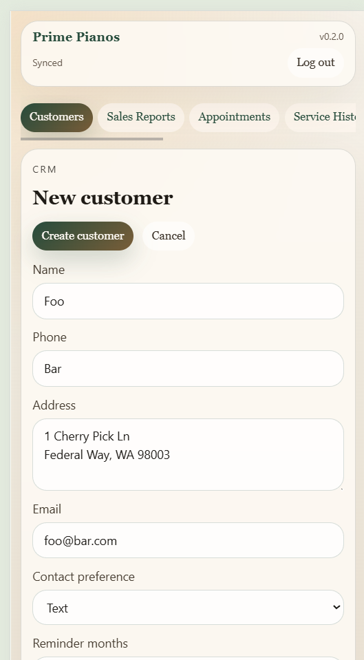
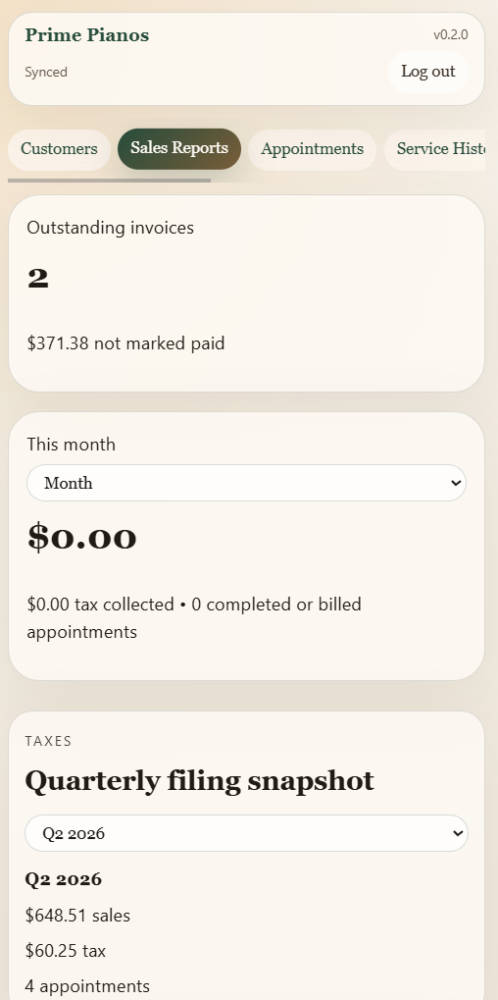
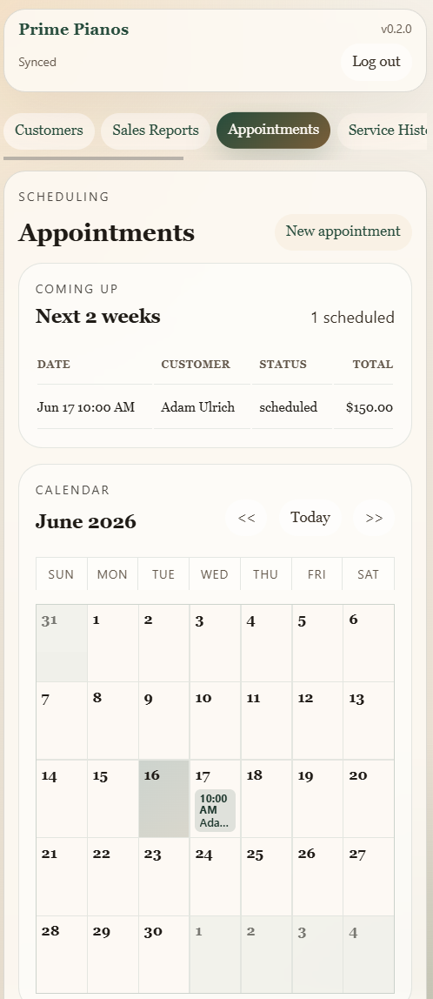
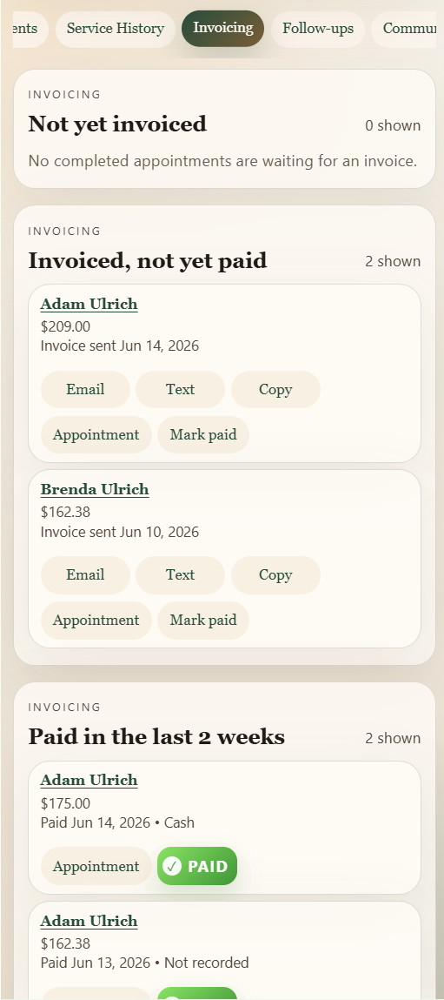
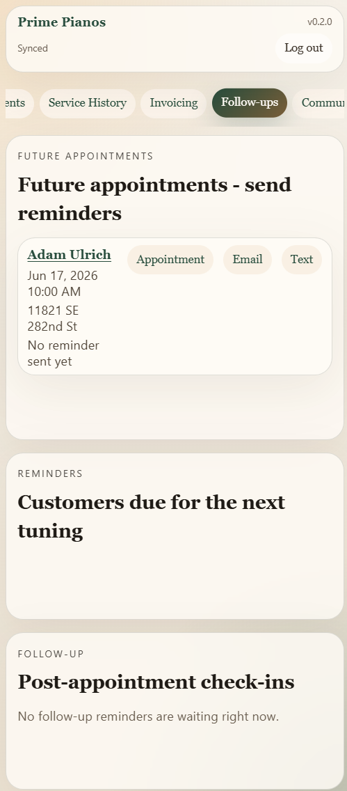

Software Project
Pitch Ledger
A small-business CRM as a progressive web app, originally built for a piano tuning business. Customer records, appointment tracking, quarterly tax rollups, email/SMS invoicing with a Venmo payment link, and a marketing-blast tool that knows not to spam recent customers.
Overview
What it is
Pitch Ledger is a lightweight CRM for a one-or-two-person service business. The first deployment is for a piano tuner, but the data model and workflow translate directly to other appointment-driven small businesses: lawn care, mobile repair, tutoring, in-home services.
The app installs as a PWA so it lives on a phone home screen and runs full-screen, with a Back4App-hosted Parse backend providing authentication and per-user data isolation. Every record is saved with an ACL tied to the logged-in user, so two businesses sharing the same deployment never see each other's customers.
Screenshots
The app, on a phone





Features
What it does
Customers and Appointments
- Full customer CRUD: name, address, email, phone, reminder preferences, notes
- Appointments tracked with date, status, base price, tax, and notes
- Per-user ACLs so each business's data is private
Money
- Quarterly sales and tax rollups for filing
- Draft invoices by email or SMS with a Venmo payment link baked in
Outreach
- Reminder queue based on each customer's last completed appointment
- Follow-up queue for post-service check-ins
- Marketing blasts with smart exclusion so recently serviced customers don't get pestered
Stack
How it's built
The frontend is a Vite-built TypeScript PWA that runs as a single
installable app on any modern phone or browser. State and storage
live in
Parse Server (Back4App),
with Parse classes for Customer,
Appointment, Business_Settings, and
CommunicationLog. Every saved object carries an
owner-scoped ACL plus ownerId/
ownerUsername fields for filtering.
Email and SMS go through Parse Cloud Functions instead of opening
the device's mailto:/sms: handlers, so
the messages are sent from the business identity rather than the
phone:
Resend
for email,
Twilio
for SMS. Cloud Functions like sendBusinessEmail,
sendBusinessSms, and sendMarketingBlast
do the actual delivery and write back to the
CommunicationLog.
Deployment is via GitHub Pages with a custom domain
(ppcm.ulrichlabs.dev); a GitHub Actions workflow
builds and publishes on push to main, with
environment-specific Parse keys held as repository secrets.